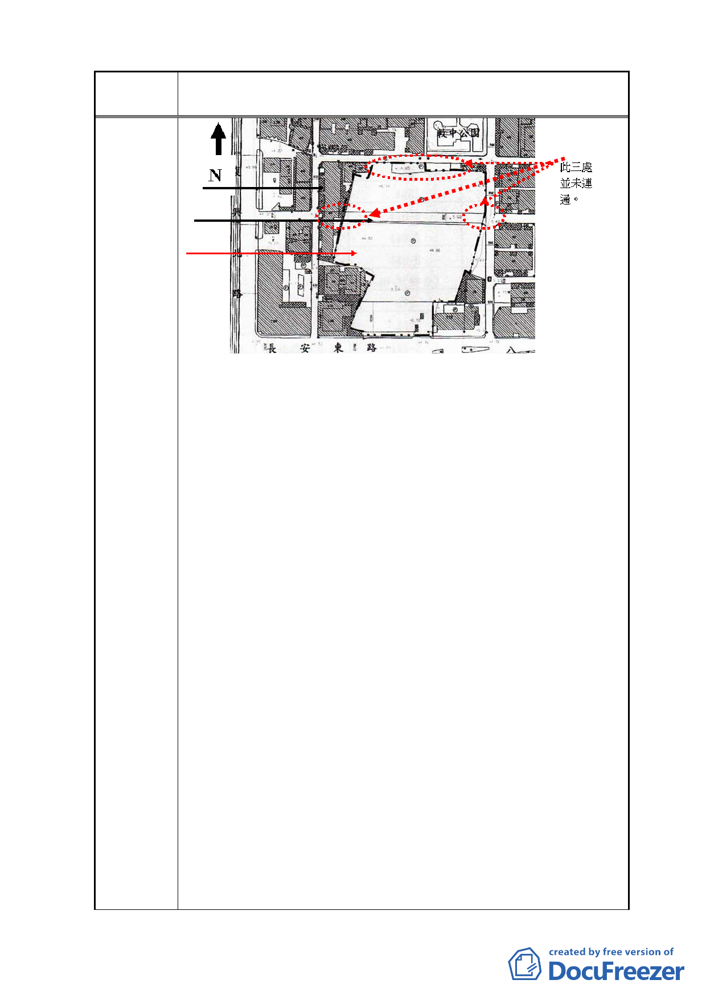

案 名 變更復興北路與長安東路口東北側第三種住宅區為第三種住
宅區（特）細部計畫案
2
3
1
1.本計畫面積 15,077 平方公尺，蓋兩棟 20 層以上建築。
2.未來在建物西側的南京東路三段 256 巷居民可以享受到晨
曦的陽光嗎？
3.依據「2010 年臺北好好看」開發計畫案：第六條（計畫說
明）第三項第三款之三（基地規模：達 0.5 公頃以上，或達
1 完整街廓以上）。但本計畫卻只在一街廓之中且為一歪七扭
八尚未整合的基地。
4.開發計畫案：第六條（計畫說明）第三項第三款之四（容積
獎勵機制）之二之 2（地面人行通道）：適用條件：面臨同一
條都市計畫道路留設之人行步道各部份淨寬度應均在 4～8
公尺【且具延續性】，始得申請獎勵。奇怪的是本案通道東
西兩側並未連貫，且相關建物持有人並未被告知或洽談，但
如申請通過卻可得『公共設施用地折算代金：約 215,014,800
元』。
5.開發計畫案：第六條（計畫說明）第五款（審查機制）2-1
政策目標：符合本府推動之親水設施…2-2…文化創意及觀
光產業發展。請問何項符合？對環境品質又有何貢獻？
6.綜觀本計畫最終目的祇不過是想將住三改為住三（特）借機
爭取獎勵的利益計畫。但最不足取的是並未與周遭鄰居充分
溝通，枉顧原有居民權益的財團霸權做法實在令人不齒。
7.有關本案我們提供下列思考方向以供參考：第三種住宅區與
三種住宅區（特）有何差別？是房屋容機率增加還是減少？
您家有沒有在【特區】內？如在該計畫內，是否要繳交受益
費？如不在計畫內可否並案申請？若未來合作金庫土地興
建時，對周邊環境會有何改變（交通動線、停車、噪音…）？
再次重申！我們並不反對建設，但如影響里民的日常作息，
就會勇於表達意見。
- 77 -